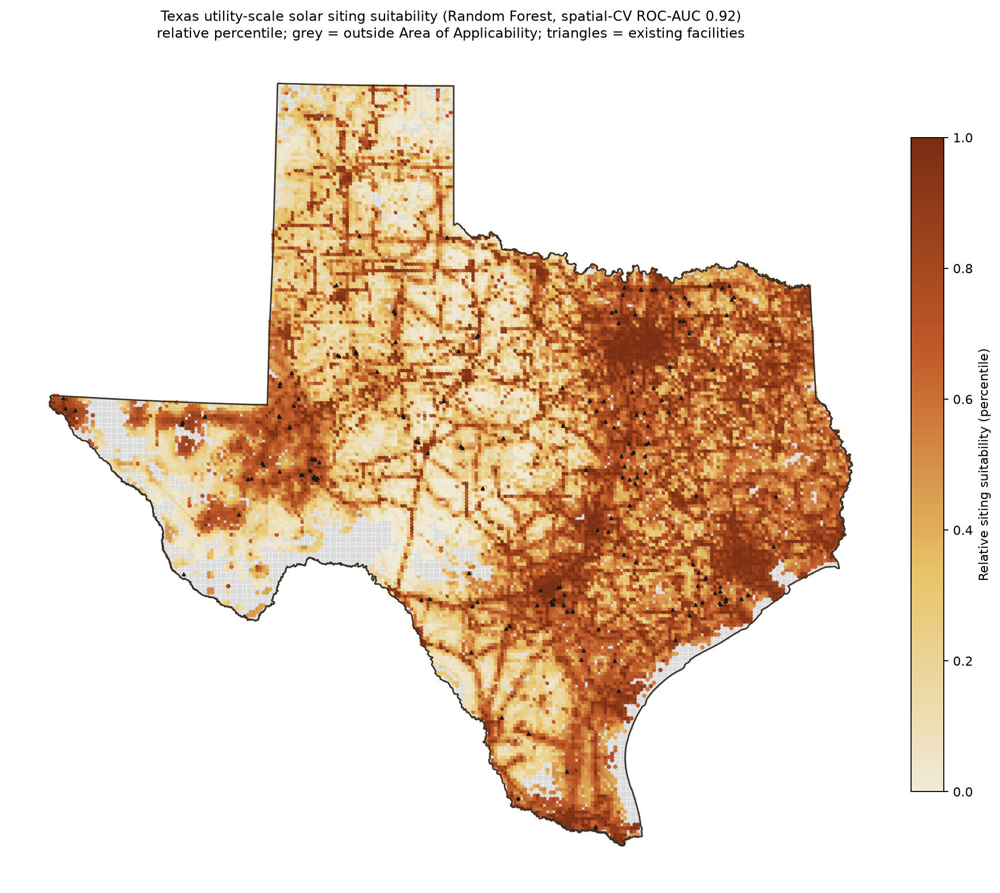
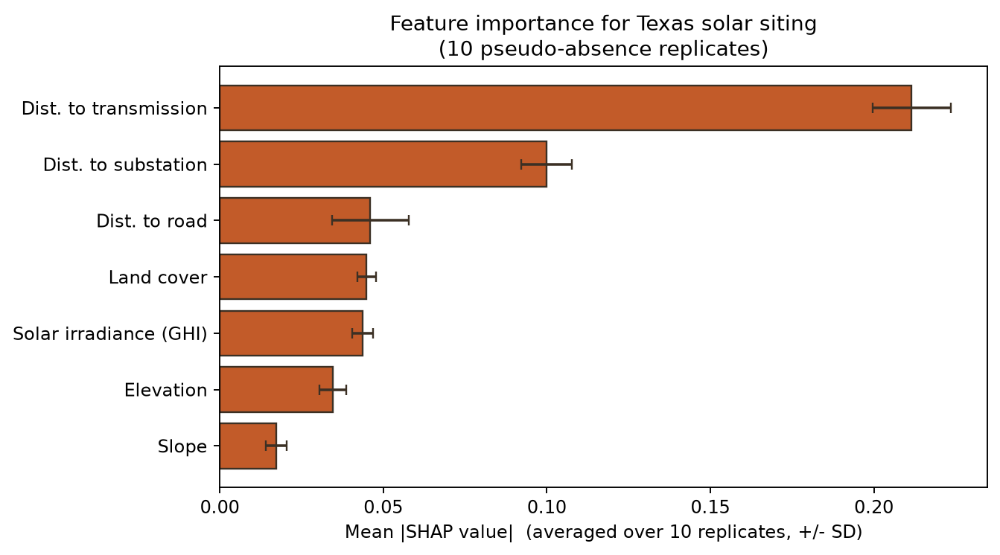
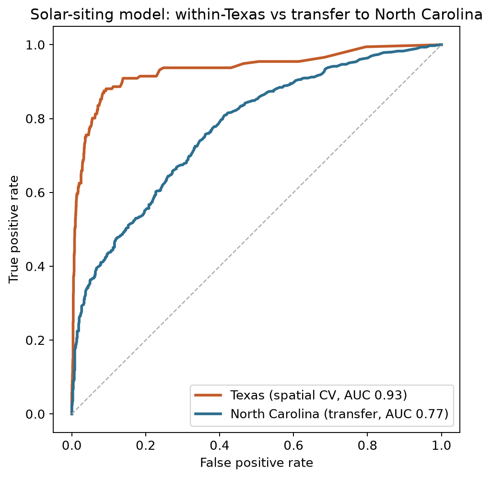
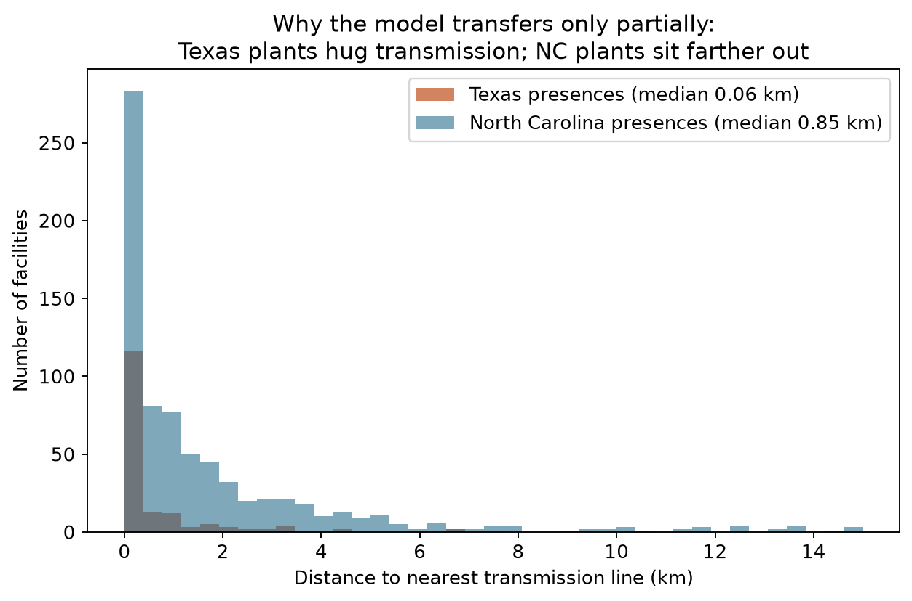
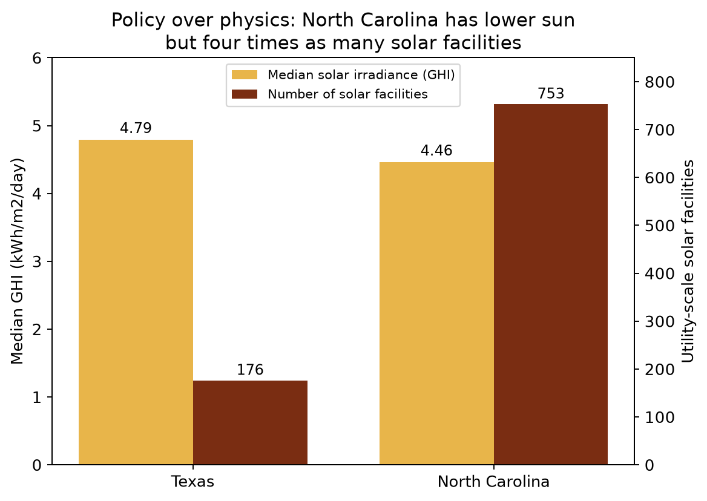

Most solar maps rank land by sunshine and slope. They describe physical potential — where panels would generate the most. But that is not where solar actually gets built.
This project models realized siting: using 176 operating utility-scale facilities, it asks what actually separates the land developers chose from the land they didn't. The answer turns out to be economic, not meteorological.
The question isn't "where is the best sun" — it's what actually drives siting decisions, and whether that rule holds in a state with completely different energy policy.

Across Texas's uniformly sunny range (4.5 to 5.87 kWh/m²/day), the marginal sunshine difference between one parcel and the next barely moves siting. Distance to transmission infrastructure dominates instead — about 9× more important than irradiance by permutation importance, 5× by SHAP.
Irradiance is not irrelevant: a Boruta shadow-feature test confirms it is a genuine predictor. It is simply a minor one. In a uniformly sunny state, what separates a built site from an unbuilt one is grid access, not sun.
| Feature | SHAP importance |
|---|---|
| Distance to transmission | 0.212 |
| Distance to substation | 0.100 |
| Distance to road | 0.046 |
| Land cover | 0.045 |
| Solar irradiance (GHI) | 0.044 |
| Elevation | 0.035 |
| Slope | 0.017 |
Transmission ranks first in all 10 replicate draws; irradiance sits in a tangled middle cluster with land cover and roads.
A single-state finding is just a single state. So the Texas-trained model was applied, untouched, to North Carolina — a state with the opposite solar economy: many small plants driven by federal PURPA and state renewable-portfolio policy, on lower irradiance, versus Texas's few large merchant-scale plants.
North Carolina built roughly four times as much solar as Texas despite worse sun. The model transfers partially (ROC-AUC 0.76 ± 0.01): the siting logic generalizes in kind — grid access matters everywhere — but shifts in degree. Texas plants hug transmission at a median of 55 m; North Carolina's sit near 850 m, connecting to distribution rather than high-voltage transmission. Same shape, different threshold.



The full arc: grid access beats irradiance within a state; worse-sun North Carolina built more (policy); the model transfers partially — siting is universal in kind, regime-specific in degree. Comparable siting papers rarely test transfer at all.
Siting features are spatially autocorrelated, and naive random cross-validation leaks that structure and inflates scores. Rather than report one optimistic number, this project reports a full validation ladder — performance degrades smoothly as the model is asked to generalize further, and the large drop appears only at the state-and-policy boundary, not within Texas.
| Validation | ROC-AUC | What it tests |
|---|---|---|
| Random CV | ~0.93 | Interpolation (optimistic) |
| Spatial block CV (130 km) | 0.92 | Spatial independence |
| Leave-one-region-out | 0.91 | Unseen Texas ecoregions |
| Transfer to North Carolina | 0.76 | Cross-state, cross-regime |
Block size was set from the data's own 12 km residual autocorrelation range, not guessed. The leave-one-region-out test holds out entire EPA ecoregions in turn — and the model still discriminates at 0.91, confirming it generalizes across Texas geography rather than memorizing local quirks.
The map's Area of Applicability (94.8% of Texas) was validated with local data-point density: 86% of in-domain cells rest on 10 or more supporting training points, not isolated near-duplicates.
- "Distance-to-transmission is circular — operating farms are wired to the grid by definition." Bounded directly: with every grid feature removed and only interconnection-immune features left (irradiance, slope, elevation, land cover), the model still discriminates at ROC 0.72. About two-thirds of the signal survives, so grid access amplifies a real pre-existing siting signal rather than being an artifact.
- "Irradiance only looks unimportant because it's coarsely resolved." The opposite is true: impurity importance is biased toward high-cardinality features, so coarse GHI was if anything penalized. Under the fair permutation metric it still ranks far below grid access, and Boruta confirms it is a real but minor predictor.
- "The ranking could be one lucky run." Across 10 replicate draws, transmission is the top feature in all 10 and substation second in all 10.
- "The transfer result could be a single-draw fluke." Stable at 0.76 ± 0.01 across 10 North Carolina pseudo-absence draws.
The problem is framed as presence-background (borrowed from species distribution modeling): verified facilities versus pseudo-absences drawn from developable land, with 10 balanced replicate draws averaged for stability. Each facility is summarized over its actual footprint, not a centroid point, so a 500 MW plant is represented by the land it occupies. Features span irradiance (NREL/NSRDB), slope and elevation (USGS 3DEP), land cover (NLCD), and distance to transmission, substations, and roads (HIFLD, TIGER). A developable-land mask excludes steep, wet, forested, and densely built terrain following NREL and peer-reviewed conventions.
- Single training state and a modest sample (176 facilities). Texas is one regime; the North Carolina transfer probes generalization but does not replace multi-state training.
- The "irradiance is minor" claim is Texas-specific — within a narrow, uniformly high irradiance range there is little gradient to track. It is not a claim that irradiance is physically irrelevant everywhere.
- Suitability outputs are relative percentiles, not calibrated probabilities — presence-background models recover relative suitability and discrimination, not absolute build probability.
- The panhandle (High Plains) is where the model extrapolates least well, reported transparently rather than smoothed over.
Every methodological choice, with its rationale and citations, is recorded in a dated decisions log in the repository.
Open the code & decisions log
Reproducible Python pipeline, eight publication-quality figures, and a dated record of every methodological choice on GitHub.